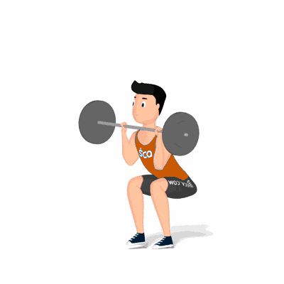

Agachamento Frontal

O exercício trabalha os músculos do quadríceps e a parte superior das costas. Auxilia na melhora da postura, da consciência corporal e da mobilidade articular. Indicado a praticante de musculação nível intermediário.
Ficha Técnica
Tipo: Musculação
Grupo Muscular: Perna
Aparelho: Nenhum
Músculos: Nenhum
Como realizar
- Posicione-se em pé com os pés afastados na largura dos ombros e apontados para fora;
- Apoie a barra sobre o tórax;
- Utilize uma pegada pronada para segurar a barra firmemente com os dedos;
- O tríceps deve permanecer paralelo ao chão para sustentar o peso da barra;
- Inspire e abaixe os quadris lentamente até que as coxas estejam paralelas ao chão, mantendo o peso imóvel;
- Faça uma pausa na parte inferior do agachamento e, depois, mova os quadris rapidamente de volta à posição inicial.
 RC STORE
RC STORE